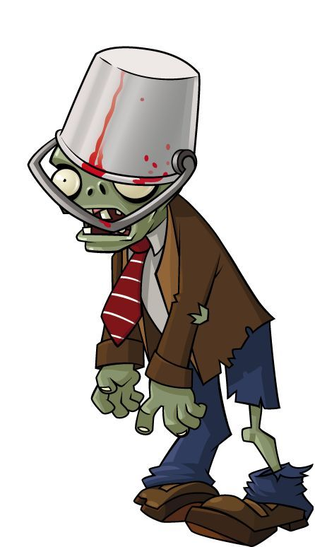
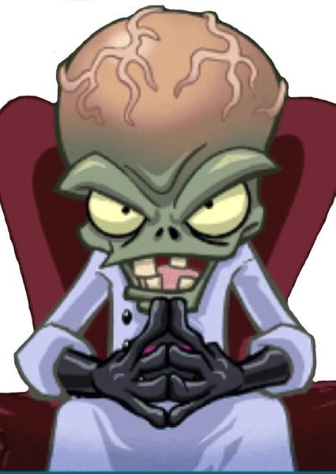

| Itens | Melhores | Motivo |
|---|---|---|
| Alimentos | Comidas com muito carboidrato e diversos nutrientes | Ajuda a manter energia no corpo,sem depender do consumo extremo |
| Armas | Armas de fogo com bom alcance ou Machados,se for corpo a corpo | Possuem maior eficiência na proteção e ataque contra grande parte dos zumbis |
| Roupas | Quaisquer roupas com partes feitas com couro ou roupas de frio | Ajuda a prevenir eventos de infecção através de mordidas dos zumbis e proteger nos momentos de ataque corpo a corpo |
| Espaços | Lugares com recursos adequados e mais fechado | É adequado um espaço onde não ocorra invasões zumbi inesperadas,nem que falte recursos sem depender de saídas arriscadas |
| Plantas | Habilidades | Preço(em...sóis?) | Posição no Ranking |
|---|---|---|---|
| MelonPult(Catapulta de Melancia) | Capaz de arremessar melancias com dano extremo,podendo atingir com dano direto nos zumbis com proteção localizada apenas no tronco e causar dano de área | 300 | 01 |
| CabbagePult(Catapulta de Repolho) | Possui o mesmo dano e uma frequência de disparo mais baixa que a Disparaervilha,mas pode causar dano como a melancia causa nos zumbis protegidos | 100 | 02 |
| Catnail(Gatinho (;-;) ) | Possui o tiro teleguiado e pode acertar os zumbis balões no ar | 225 (sem contar a necessidade de ter uma vitória-régia(25)) | 03 |
| Imitador | Permite você usar uma planta mais de uma vez sem esperar a recarga devido ao seu poder de clonagem | varia conforme a planta | 04 |
| Sunflower(Girassol) | Gera a energia solar necessária para comprar outras plantas | 50 | 05 |
| Scaredy-shroom (Medogumelo) | pode atirar normalmente como a disparaervilha,mas os zumbis próximos deixarem ele com medo | 25 (no caso do dia,será necessário o uso do Coffee Bean,que é 75,totalizando 100) | 06 |
| Puff-shroom(Soprogumelo) | Pode atirar com curto alcance,mas possui dano normal | 0(a menos que use-o no dia,que vai precisar do Coffee Bean,dando 75) | 07 |
| Starfruit (estrela) | Atira em 5 direções diferentes com o mesmo dano da disparaervilha | 125 | 08 |